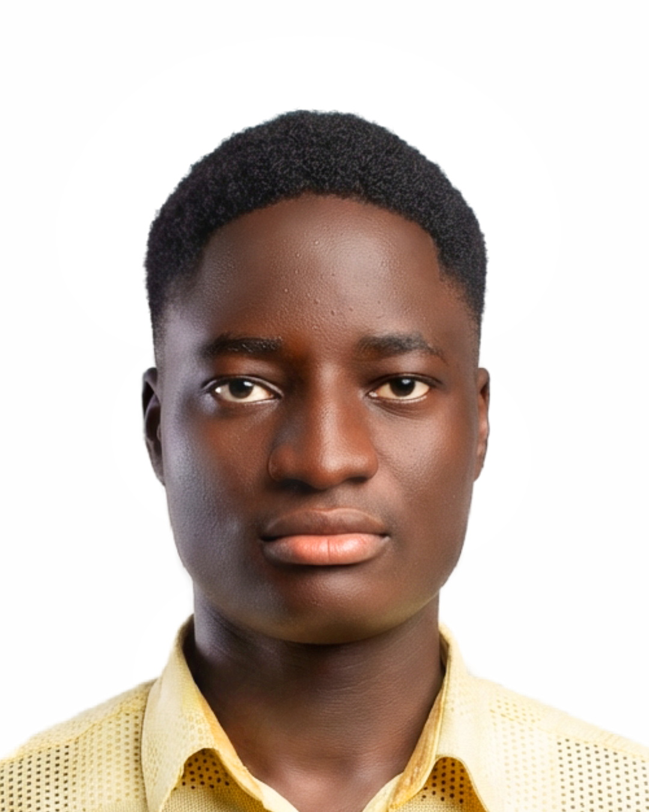
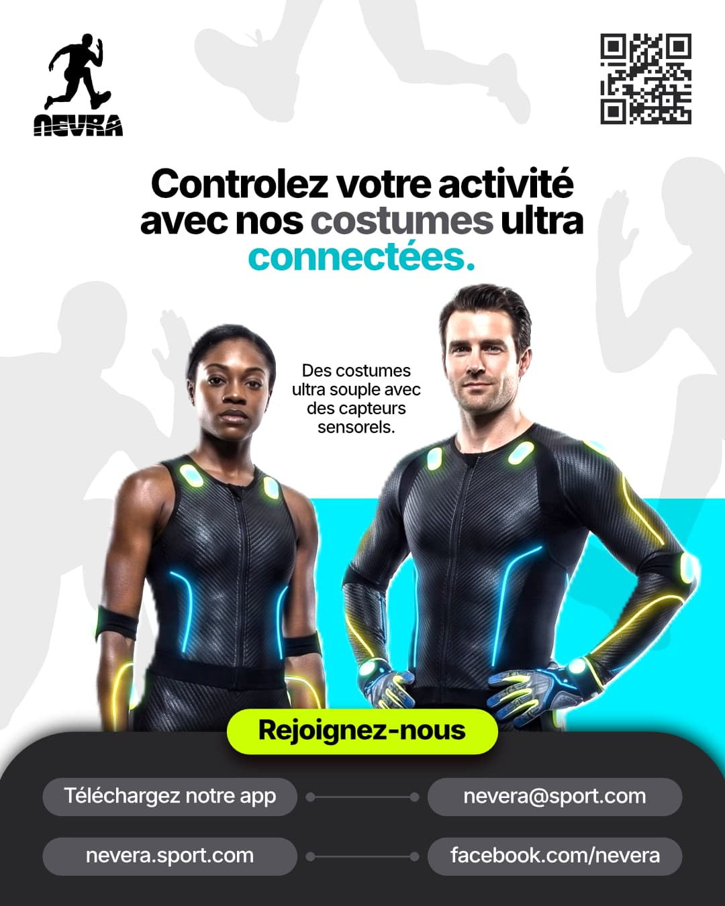
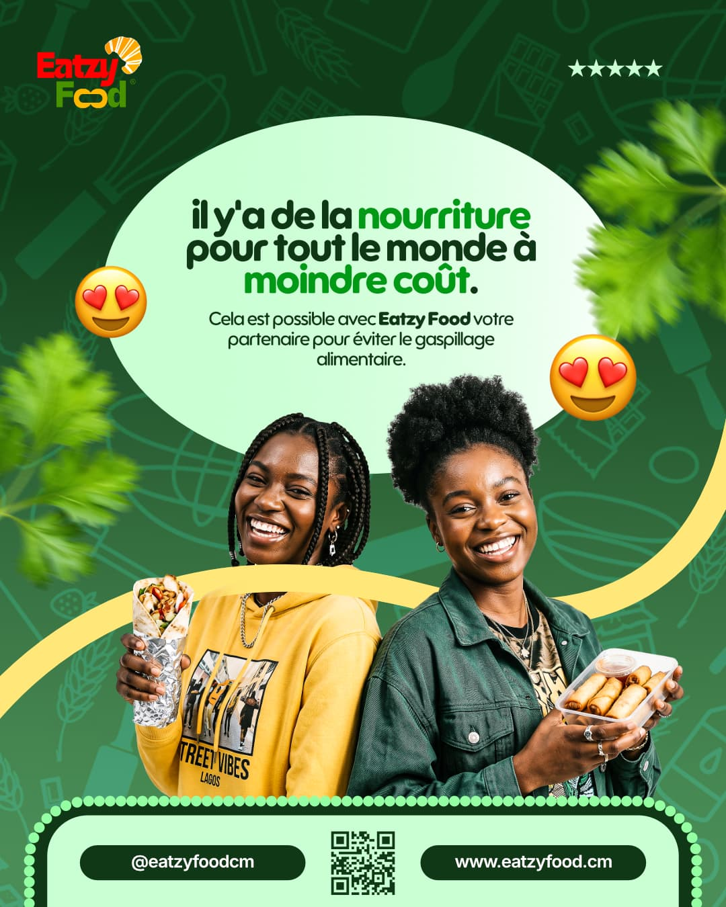
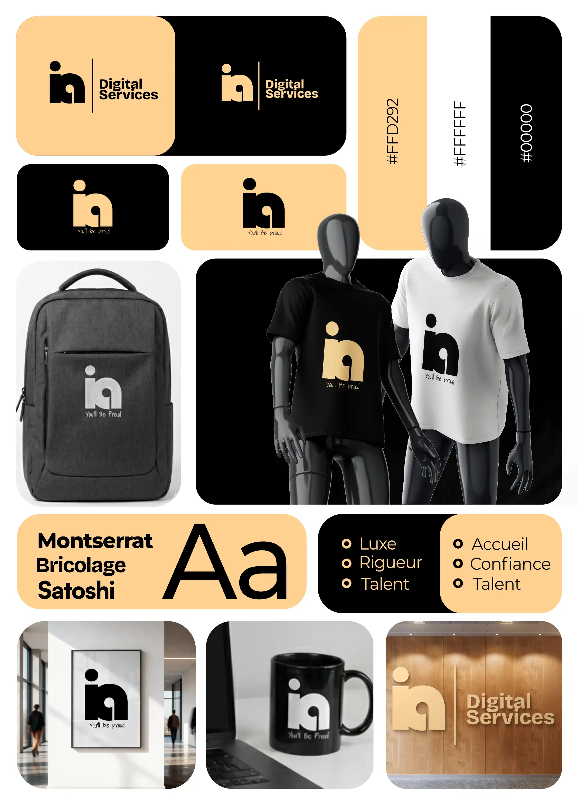

01
Le noir comme scène
Un fond noir profond met tes visuels en lumière. Les cartes et les surfaces se détachent par de légers aplats, jamais par du flou.
Charte graphique · v1 · Octobre 2026
Une direction éditoriale, premium et chaleureuse. Le noir structure, l'or attire le regard, le rouille signale l'action. Pas de dégradés multicolores, pas de flou : des aplats, des filets fins et de la typographie.
Trois principes pour que le site ressemble à ton travail : précis, affirmé, sans bruit inutile.
Un fond noir profond met tes visuels en lumière. Les cartes et les surfaces se détachent par de légers aplats, jamais par du flou.
Réservé aux titres, filets, chiffres et boutons principaux. C'est la couleur qu'on retient de toi.
Petites touches : catégories, tags, états, CTA secondaires. Il réchauffe sans concurrencer l'or.
Les ratios de contraste sont calculés. Chaque couleur a un rôle précis : ne pas les intervertir.
Syne pour les titres : géométrique, affirmée, mémorable. Plus Jakarta Sans pour lire : neutre et très lisible.
Chaque visuel a un objectif : rendre votre marque plus claire, plus crédible et plus difficile à ignorer. Je conçois l'identité, les supports et les contenus qui portent ce message.
Designer graphique & stratège de marque
Des règles simples, tenues partout : un seul bouton principal par écran, des filets à 12 % de blanc, des rayons discrets.
Aperçu de la page d'accueil avec le nouveau copywriting et la palette appliquée.
Designer graphique & stratège de marque
Identité visuelle, communication et contenus digitaux pour les ONG, startups et entreprises qui veulent être vues — et choisies. Basé à Yaoundé, disponible à distance.

L'image domine, le texte est court, la catégorie en or avec une pastille rouille. Le survol reste sobre.



Même système, inversé : le rouille devient l'accent lisible, l'or reste en aplat.
Mode clair
Le fond blanc repose la lecture. Le rouille prend le relais de l'or pour les liens et petits textes, car l'or sur blanc ne passe pas le contraste.
Une série d'affiches pour remplir les tribunes, déclinée en posts et stories.
Les erreurs qui casseraient la direction en une phrase.